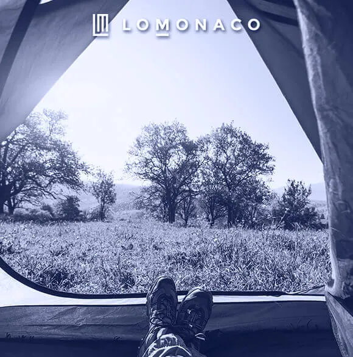

Dormir en la playa o en la montaña II: El efecto de la altura sobre el sueño

La altitud influye sobre el sueño
En primer lugar cabe plantearse si el dormir en una altitud notablemente diferente (como suele ser al comparar playa y montaña) tiene efecto en el descanso y, si es así, de qué forma influye. Cabe comenzar diciendo que, pese a las diferentes evidencias del efecto de la altitud sobe el sueño, no existen muchos estudios que se centren en el efecto de la altitud en el sueño de personas sanas.
La altitud y alta presión tienen efectos perjudiciales para el sueño, especialmente en individuos no aclimatados. En medicina de montaña la altitud supone un distrés que depende principalmente de la susceptibilidad individual al desarrollo de respiración periódica durante el sueño, a la aclimatación, a la velocidad de ascenso y al nivel de altitud alcanzado, lo que conlleva unos efectos sobre el sueño perjudiciales, con pérdida de sueño profundo junto a alteraciones respiratorias hipóxicas. El ambiente hiperbárico, propio de la medicina subacuática, altera los patrones de sueño por la presión elevada, aunque estas alteraciones son reversibles durante la descompresión.
El “mal de montaña” y el sueño
La presión barométrica disminuye con la altitud y, sin oxígeno suplementario, el llamado “mal de montaña” cursa con confusión y disminución del rendimiento mental y psicomotor; y a más altura se podría desarrollar edema cerebral y pulmonar. La altitud, por tanto, representa un reto físico que va a influir de distintas maneras en nuestro organismo.
El mal de montaña se asocia a desaturación de oxígeno durante el sueño en grandes altitudes. La respiración periódica en la altitud está representada principalmente por la apnea central del sueño, lo que hace que el sueño se interrumpa. En adultos, un moderado síndrome de apnea obstructiva del sueño al nivel del mar se convierte en una grave apnea central del sueño a unos 2.750 m, con un gran número de apneas durante el sueño REM. A mayor altitud la diferencia de presión va a producir una variación en la presión del aire en nuestra garganta. Como se sabe por anteriores entradas una de las principales causas de la apnea del sueño es un funcionamiento anómalo de la musculatura de la laringe. En grandes alturas estos síntomas se agravan. Todo ello, va a influir en un peor descanso con mayores despertares y un sueño más ligero.
El insomnio, como tal, se puede produce en personas que no sufren este trastorno habitualmente a partir de los 2.000 m, aumentando con elevaciones durante las primeras semanas de aclimatación. Los trastornos del sueño van desde una disminución de tiempo total de sueño, con numerosos despertares, a una disminución o desaparición del sueño profundo. No obstante, cabe remarcar que la mayoría de estudios se centran en el efecto de la altura en menores, personas que sufren apnea previamente y, en aquellos casos en los que se estudia en personas sanas los resultados son contradictorios.
Alejandro Guillén Riquelme, es Doctor en Psicología por la Universidad de Granada. En la actualidad es investigador en el Centro de Investigación Mente, Cerebro y Comportamiento (CIMCYC) de la Universidad de Granada. En este centro es responsable del Laboratorio del Sueño y Promoción de la Salud. Durante su formación ha realizado el Máster de Diseños de Investigación y Aplicaciones en Psicología y Salud, así como varios cursos sobre metodología, estadística e investigación. A lo largo de su carrera destaca el estudio de la evaluación de la ansiedad, siendo coautor de la adaptación española del STAI, el séptimo cuestionario más empleado en España. Ha participado en cinco proyectos de investigación y ha publicado 30 artículos (27 de los cuales en revistas indexadas en el Journal Citation Reports).
Gualberto Buela Casal. Catedrático de Psicología Clínica y director del Laboratorio de sueño del Centro de Investigación Mente, Cerebro y Comportamiento (CIMCYC).